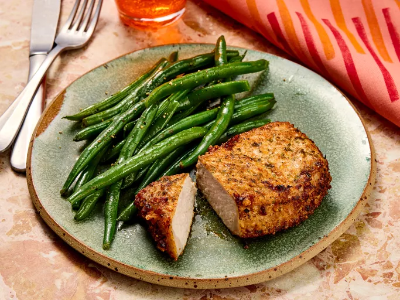
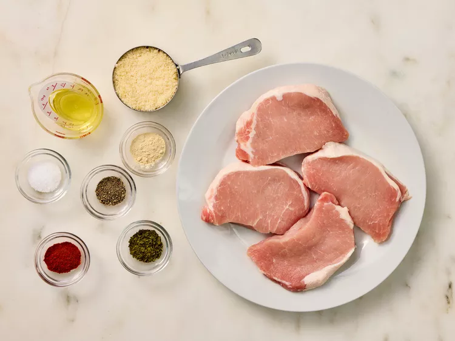
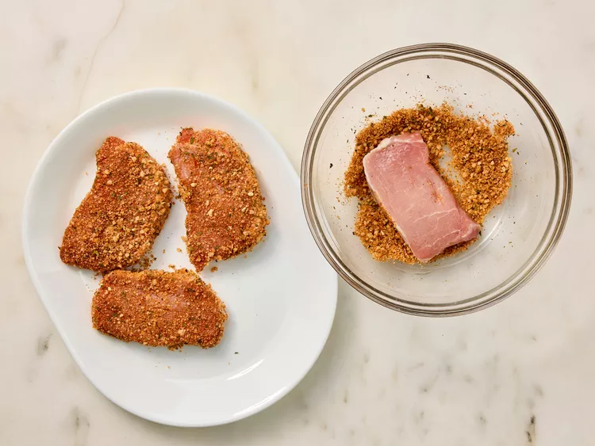
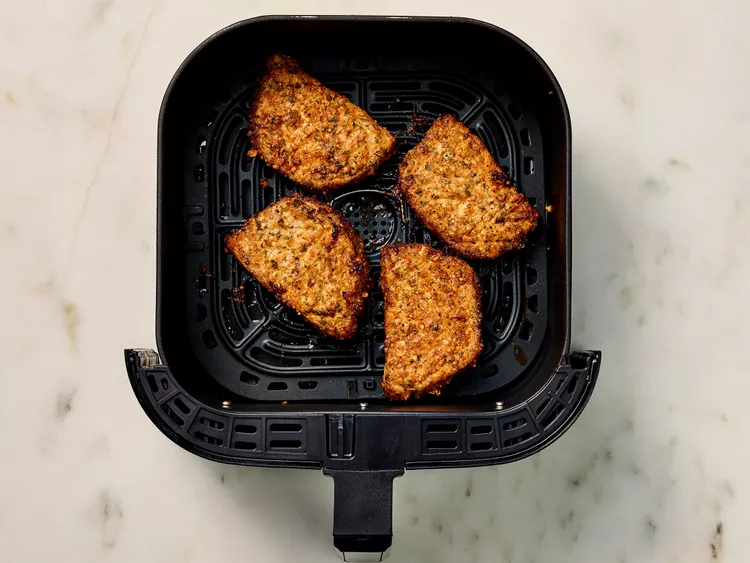

Home
Air Fryer Pork Chop

Finished Air Fryer Pork Chop
This recipe for the Best Damn Air Fryer Pork Chops is so juicy, tender and delicious, it’s sure to quickly become a favorite air fryer recipe. With a few simple ingredients, and only 12 minutes cook time, these air fryer pork chops are perfect for a tasty dinner any day of the week.
ingredients
- ½ cup grated Parmesan cheese
- 1 teaspoon paprika
- 1 teaspoon garlic powder
- 1 teaspoon kosher salt
- 1 teaspoon dried parsley
- ½ teaspoon ground black pepper
- 4 (5-ounce) boneless pork chops
- 2 tablespoons extra virgin olive oil
Steps
- Step 1
Gather the ingredients. Preheat the air fryer to 380 degrees F (190 degrees C).

- Step 2
Combine Parmesan cheese, paprika, garlic powder, salt, parsley, and pepper in a flat shallow dish; mix well.

- Step 3
Coat each pork chop with olive oil. Dredge both sides of each chop in the Parmesan mixture and set on a plate.

- Step 4
Place 2 chops in the basket of the air fryer and cook for 10 minutes; flipping halfway through cook time. Transfer to a cutting board and let rest for 5 minutes. Repeat with remaining chops.

- Step 5
Served hot and enjoy!